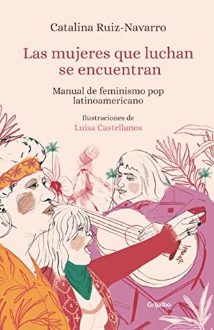

Las mujeres que luchan se encuentran: Manual de feminismo pop latinoamericano
Reseña por Jorge I. Zuluaga

Ver reseña en GoodReads (necesita cuenta)
Es por todo esto este libro me cae como un baldado de agua fría. Un duro baño de realidad para mi frágil masculinidad. Pero, todo hay que decirlo, algún día tiene que bañarse uno.
Compre el libro como un regalo para mi esposa (que lo leyó primero que yo), quién fue la persona por la que llegue a las lecturas sobre feminismos. En realidad, ambos comenzamos más o menos simultáneamente a escuchar o leer sobre estos temas por la positiva influencia de un par de excelentes podcasts feministas, podcasts, eso sí, descubiertos y escuchados por su iniciativa.
No empecé por tanto a leer “Las mujeres que luchan se encuentran” pensando que sería simplemente un libro educativo o informativo. Había leído algunas columnas de Catalina Ruiz-Navarro, sus posts en redes sociales y visto algunas de sus entrevistas; suficiente información para conocer el estilo de Catalina. Aún así no esperaba que fuera un texto tan exhaustivo y por qué no, tan crudo.
Ahora pienso que es afortunado que ese baño de realidad, de la realidad invisible que el feminismo lleva más de 2 siglos denunciando, se produzca debajo de la cascada de palabras bien articuladas y ampliamente soportadas en evidencia y al mismo tiempo del buen humor y el desparpajo de una intelectual de la talla de Catalina Ruiz-Navarro.
Invito a muchos más hombres (o a personas masculinas como se lo leí a Catalina) para que saquen el tiempo y lean "Las mujeres que luchan se encuentran".
Por su título no parece un libro dirigido a nosotros (los hombres). Pero creo que si hay un grupo de personas que necesita urgentemente leer este libro, y muchos otros libros de feminismos, y hacerlo justamente ahora, somos justamente nosotros.
En ninguna página la autora declara que sea un libro de feminismos dirigido exclusivamente para feministas o para mujeres en general. Si bien hay apartes de los que pueden sacar más provecho o con los que pueden identificarse más directamente la mujeres, yo no sentí que hubiera una sola página que fuera irrelevante para el mensaje general del texto o que no fuera de interés para mí como hombre privilegiado que vive entre mujeres.
El libro recoge una colección de ensayos por un lado escritos escritos por Catalina Ruiz-Navarro para distintos medios de comunicación (editados y ampliados para darle una unidad narrativa) y otros exclusivamente compilados para el libro. Los ensayos giran alrededor de 6 grandes temas que constituyen las partes en las que se divide del libro: el cuerpo, el poder, la violencia de genero, el sexo, el amor y el activismo. Me atrevería a decir, sin mucha autoridad intelectual para afirmarlo, que no queda tema por tratar.
Cada uno de los temas es abordado desde una increíble diversidad de ángulos. En el caso del sexo por ejemplo (una de mis partes favoritas porque casi todo era nuevo para mi - aunque ya explique, soy un hombre casado), Catalina no se reduce a hablar de las reinvindicaciones del feminismo sobre la libertad sexual y el derecho de las mujeres para vivir plenamente su sexualidad (y para elegirla), sino que además incluye una extensa discusión sobre el aborto, la prostitución, la pornografía, el sexting, las enfermedades de transmisión sexual y más, mucho más.
Sus posiciones son siempre inesperadas y muy originales. Nadie se imagina, por ejemplo, encontrar en un libro de feminismo (spoiler alert) una defensa del reguetón, la champeta, la prostitución o la pornografía. Bueno, nadie que no sepa de feminismos, porque después de leer a Catalina es difícil que no concuerdes con los argumentos y evidencias que presenta en cada uno de esos casos.
El libro no solo tiene la voz de Catalina sino que da voz a otras mujeres: mujeres indígenas, mujeres racializadas, mujeres trans. Lo hace a través de una serie de entrevistas que abren o cierran algunos de los capítulos. Al incluir estas voces diversas, Catalina aplica una de sus recomendaciones para las personas con privilegios (privilegios de los que ella misma goza, como lo reconoce todo el tiempo): utilizar esas ventajas, en este caso la ventaja de la que goza de poder publicar un libro, uno que muchos leeremos, con una editorial reconocida y del que se puede dar el lujo de sacar 5 ediciones, para darle voz a personas menos privilegiadas. Catalina predica y aplica. ¡Excelente!
Una cosa que me gusto mucho de Catalina como autora es que a lo largo del texto reconoce que sus posiciones sobre distintos asuntos del feminismo han cambiado. Ninguna persona es la misma siempre. Y no solo menciona abiertamente que al conocer a otras mujeres y situaciones más allá del círculo limitado de sus privilegios, ha tenido que re evaluar sus propias convicciones, sino que cita textos propios en los que sostuvo posiciones que ya no defiende. Esto es algo que no había visto en otros libros, y aunque es natural que el formato de este libro se preste para estos ejercicios de honestidad intelectual, valoro mucho que alguien que defiende los valores del feminismo, lo haga abiertamente: una lección más.
¡Lean a Catalina ahora!